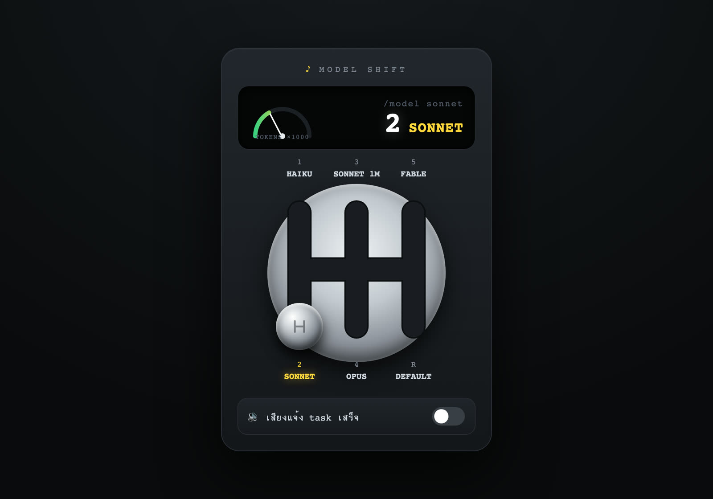
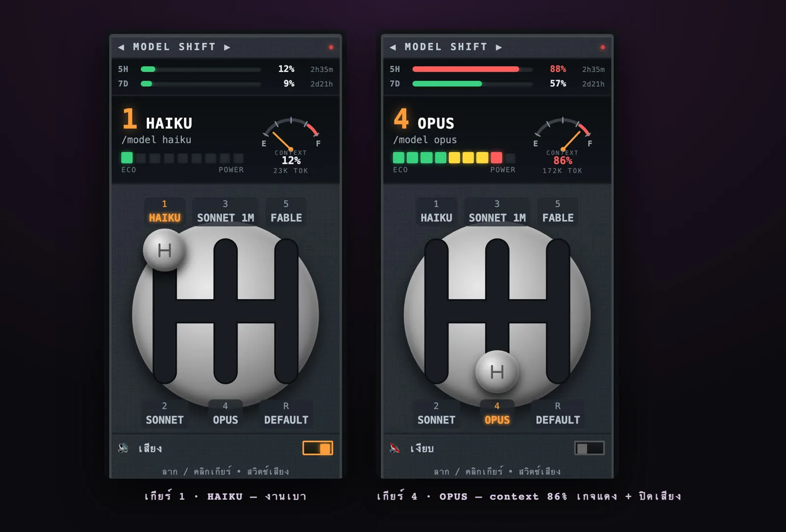
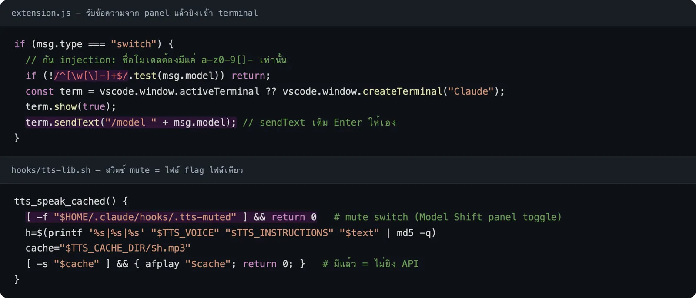

Model Shift — switch Claude Code models like a gear stick
A VS Code / Cursor extension that turns typing /model into shifting a gear stick: switch Claude Code models instantly, see the state visually, and mute task-done sounds with one switch. Built with vanilla JS + Bun, no npm dependencies, and no data leaves the machine.

A VS Code / Cursor extension that takes typing /model out into a separate panel shaped like a car gear stick (H-pattern). Shift to switch models instantly while talking to Claude Code, with the real state synced from the transcript and one switch to mute or unmute task-done sounds.
The problem
Why is switching models back and forth while working with Claude Code more annoying than it should be?

/model and remembering the flag name mid-conversation (terminal mockup)Claude Code can switch models with /model <name>, but you have to type it and remember the flag name (sonnet[1m], fable) every time. The list keeps growing (Haiku / Sonnet / Sonnet 1M / Opus / Fable), and I switch often to balance cost, quality and speed. Typing commands mid-conversation breaks the flow, and the state ("which model is active, how much context is left") is plain text with nothing visual.
Typing /model every time is slow, and you have to remember flags
Flag names don't match the names you see (sonnet[1m], fable) and change between Claude Code versions. Get one wrong and the switch fails, so you type it again.
More models means more switching
Haiku / Sonnet / Sonnet 1M / Opus / Fable: light tasks get the cheap model, hard ones move up. Switching back and forth to balance cost and quality happens many times per session.
I wanted to switch from a separate panel, not the input area
Typing a command in the middle of a prompt breaks the flow. I wanted a control "outside" the TUI that switches with one click without leaving the conversation.
No visual state
Which model is active? Is the context almost full? It's all text. I wanted a car-dashboard readout you understand at a glance.
Task-done sounds are hard to silence in meetings
I set up sounds for when a task finishes, but they need to go quiet fast when a meeting starts. Editing config or restarting claude is too slow.
The solution
Turn the typed command into a gear stick: one shift = one model switch, with the state shown visually like a car dashboard

An H-pattern gear stick in its own panel
A panel in the activity bar shaped like a 6-position car gear stick. Drag the knob or click a label to switch models instantly without interrupting your prompt.
Send /model straight into the terminal
Claude Code has no API for switching from outside, so the control sends terminal.sendText("/model opus") into the integrated terminal where claude is running (the web surface uses tmux send-keys)
Show the state visually
The current gear + a VU meter (model strength) + a fuel-style E→F context gauge: one glance tells you which model is active and whether the context is nearly full
Sync the real model from the transcript
Polls the session *.jsonl file, reads the actual message.model and quietly moves the gear to match, so the UI stays in sync even if the user types /model manually
One switch to mute sounds
The switch runs touch/rm on a .tts-muted flag file that the TTS hooks check. All sounds go quiet or come back at once, with no claude restart, in time for a meeting.
How it works, in 4 steps
From opening the panel to the model actually switching in the conversation

/model opus to the integrated terminal where claude runs (real panel · the VS Code window and terminal are a mockup)Open the panel
Click the gear icon in the activity bar → the H-pattern gear stick panel appears in the sidebar
Shift gear
Drag the knob / click a label → sendText("/model opus") goes into the terminal, with a ka-chunk sound
Panel sync
Polls the transcript every 5 seconds, reads the real model and tokens → moves the gear and updates the context gauge
Flip the sound switch
touch/rm .tts-muted → task-done sounds mute or unmute instantly, no restart
Tech Stack & Architecture
Two surfaces on the same mechanism: zero npm dependencies, no data leaves the machine

tmux send-keysVS Code Extension API puts the control genuinely "outside" the TUI, and sendText sends /model into the integrated terminal without needing an API Claude Code doesn't have · Bun.serve + tmux is a fallback surface for plain-terminal users — native, no express · A flag file (.tts-muted) mutes every hook from one place without a restart · Plain vanilla JS + zero npm dependencies — as a designer I can edit the UI in one file, with no build step
What I built: 8 core capabilities
Everything from shifting gear and sending the command to the task-done sound

H-Pattern Gear Shifter
A 6-position gear stick (1–5 + R). Drag the knob and it snaps to the nearest gear, or click a label directly. It feels like shifting a real car.
Model Switcher
Sends sendText("/model <name>") into the integrated terminal (surface B uses tmux send-keys), so you switch models without typing
Real-Model Sync
Polls *.jsonl every 5 seconds, reads the real message.model → quietly moves the gear to match, so the UI never drifts out of sync
Context Gauge
A fuel gauge E→F calculated from input + cache_read + cache_creation of the latest message against a 200K window
VU Meter
The bars show how "strong" the model is, based on an rpm value mapped to each gear, so you can tell whether you're on a light or heavy model
Ka-chunk Sound
The click when you change gear is generated live with Web Audio (clack()). No audio files, just the feel of a gear stick.
17 task-done voice personas
A Stop hook picks 1 of 17 personas at random each time a task finishes (news anchor / robot / butler, and so on) via TTS, with a say fallback
Mute Switch
A switch in the panel runs touch/rm on the .tts-muted file the hooks check, muting or unmuting every sound instantly without restarting claude
The panel
Click the gear icon in the activity bar → see the current gear, context gauge and sound switch on one screen

Hacking the problems
6 problems I had to solve myself: tooling limits and building commands safely

Claude Code has no API for switching models from outside
I wanted a button to switch models, but there is no endpoint or SDK to call. How do you control it from a separate panel?
/model <name> + Enter into the terminal where claude runs. The main surface uses VS Code's activeTerminal.sendText() (no tmux needed); the fallback surface uses tmux send-keys for plain-terminal users.Sending model names into a shell/terminal risks injection
Values concatenated into a send-keys / sendText command could smuggle in other commands if they aren't checked first.
^[\w\[\]-]+$ before every send (on both surfaces), allowing only a–z 0–9 [ ] -. The web side also uses Bun.$ interpolation, which escapes automatically and passes the value as a single arg.The UI was one-way and didn't know the real model
It could set the model, but if the user typed /model in the conversation, the gear on the panel fell out of sync with reality.
*.jsonl, read message.model → quietly move the gear (no repeat /model, no sound). After a manual shift, sync pauses for 30 seconds so a not-yet-updated transcript doesn't pull the gear back.The gear stick had to feel real
A plain button would be no different from the built-in /model picker. It needed the "feel" of shifting gears.
(g.x-px)²+(g.y-py)²), with a ka-chunk sound generated live by Web Audio on each shift. The visual layer sits on top of the existing logic without touching the command mechanism.Sound had to be quick to mute, without a restart
Task-done sounds come from several hooks that run separately. How do you silence all of them quickly for a meeting?
tts-lib.sh, with a guard [ -f ~/.claude/hooks/.tts-muted ] && return 0 at the top of the speak function. The switch only touches/removes the flag file, so everything mutes or unmutes at once without restarting claude.Calling the TTS API every time was expensive and slow
Generating new audio each time a task finishes costs money, needs a connection and adds delay, and each persona played at a different volume.
md5(voice+instructions+text). If the file exists, it just runs afplay (0 API calls, $0); if not, it generates once and saves. Every clip is normalized with ffmpeg loudnorm to -16 LUFS so they play at the same volume (without ffmpeg it skips this step and still works).Deliberate design decisions
What I chose not to build matters as much as what I built
This tool does one job: switch models faster and show the state visually. It doesn't replace Claude Code's built-in /model picker (its value is "faster, visual, no flags to remember"), the sync only reads from the transcript and never writes back, and no data leaves the machine. A clear scope from the start meant a direct implementation that's easy to maintain.
Sends the command, doesn't replace the picker
Its value is speed and visibility, not filling a missing feature
Read-only sync
Reads the transcript for display, never writes back or touches the session
Mute = one flag file
Controls every hook with a single file, no restart needed
Zero npm dependency
Vanilla JS + Bun: edit the UI in one file, no build step
Knowledge domains that got stronger
5 areas where my skills actually moved up through this project

message.model and token usage in the *.jsonl transcript (sample values)I learned activity bar view containers and webview providers, messaging between the extension host and the webview, using vscode.window.activeTerminal.sendText() to send commands to the terminal, reading and writing files with fs, and packaging a .vsix to install permanently in Cursor. From zero to a complete, working extension. Lesson: a webview is just HTML/JS, but you have to think the host↔view boundary through.
I learned that when a tool has no API for outside control, you can still integrate by "typing" commands into the terminal. sendText (VS Code) and tmux send-keys are two patterns of the same idea. Lesson: automation doesn't always have to wait for an official API, but you have to accept that it's one-way and design a separate sync.
I learned the structure of session *.jsonl files: message.model gives the actual model, token usage is split into input / cache_read / cache_creation, and the Stop hook fires when a task finishes. I used these for both the gear sync and the context gauge. Lesson: Claude Code's state can be read from files, if you know where to look.
I wrote bash hooks that source a shared library, connected OpenAI TTS (gpt-4o-mini-tts) with an offline fallback (say), cached by md5 hash to avoid repeat API calls, and normalized loudness with ffmpeg loudnorm → -16 LUFS. Lesson: caching plus a fallback lets a feature that depends on an external API degrade gracefully and cheaply.
I practiced whitelisting with regex before using values to build shell/terminal commands, and used Bun.$, which escapes automatically, instead of concatenating strings. Lesson: every place input flows into a command is a place to think about injection, and the right validate + escape pattern prevents it.